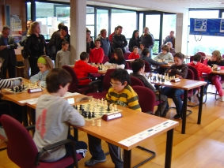

Agustin de Leitza Xake Elkartea |
| » hasiera » elkarteko bazkideak » taldekako txapelketa » azken txapelketak » loturak |
Alebin eta infantil mailetako bakarka finalak 200909-04-25Larunbat honetan jokatu dira alebin eta infantil mailetako bakarkako finalak eta gure bi jokalari jokatu dute, Urtzi eta Rubén, Urtzik jokatu du infantil mailan eta Rubén alebin mailan. Txapelketa jokatu da Gros xake taldearen egoitzan Grosen, eta jende asko bildu da han jokalari, monitore eta gurasoeen artean, eta garrantzitsuena, xake festa bat izan da. Txapelketa biak 6 txandetara jokatu dira, 4 goizean eta 2 arratsaldean, erritmoa izan da 25 minutu bakoitzari, nahiz eta adin hauetan hau soberan dago. 
Albein torneoa (1997an eta 1998an jaiotakoak) 28 jokalarik jokatu dute,
Rubén 14. sailkatu da 6tik 3 puntuekin, ez da emaitza txarra
baina gehiago epero zen kontuan hartuz hurrengo urtean infantil mailan
izango dela. Txapelketaren
laburpena pdf.Rubén 5. txandan jokatzen.  Urtzi 5. txandan jokatzen. |